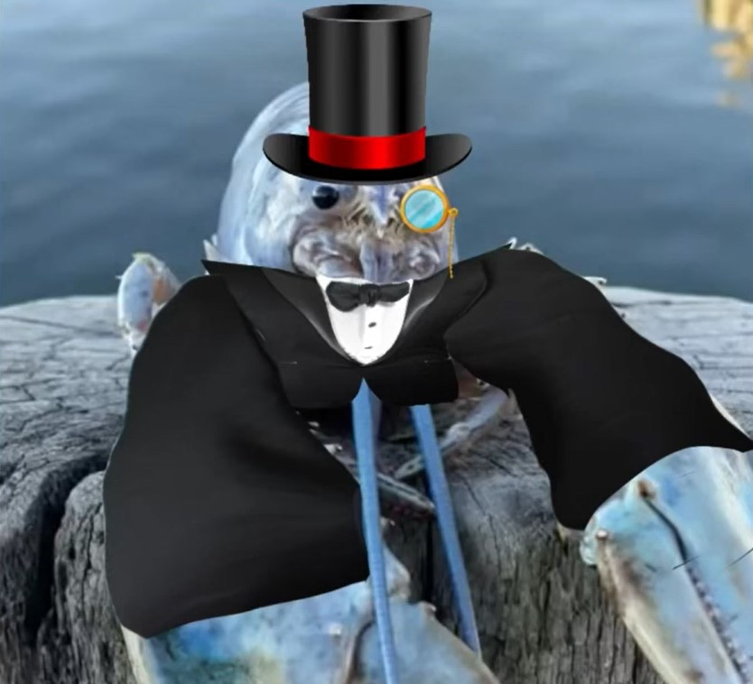
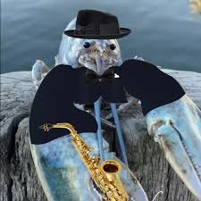
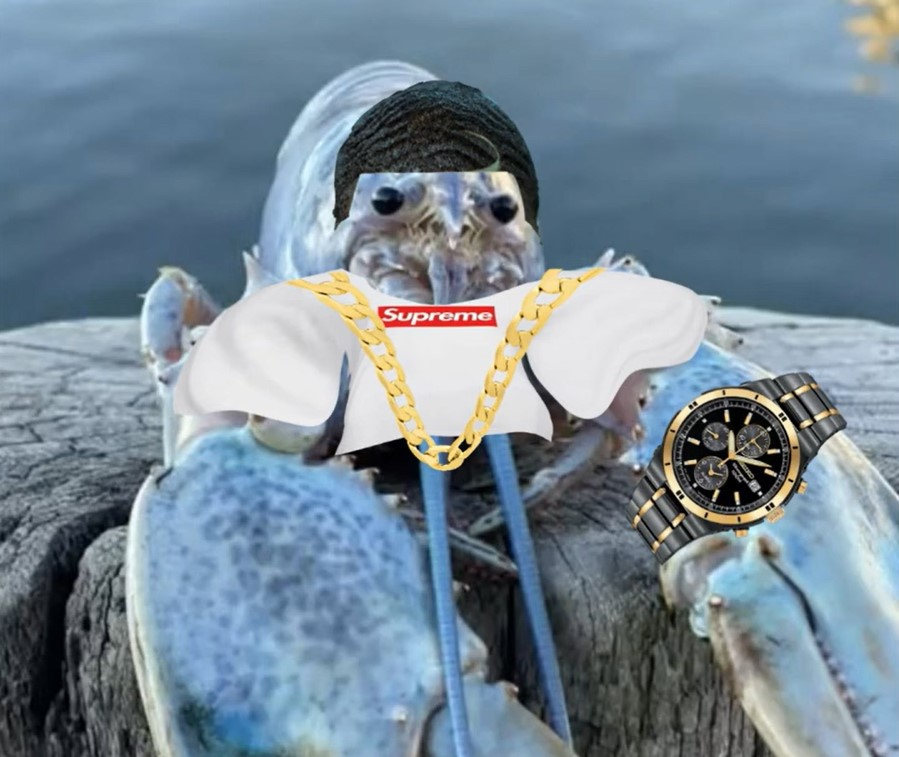
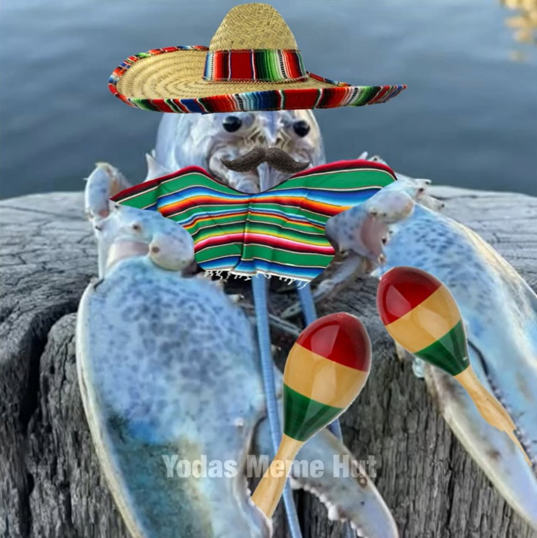
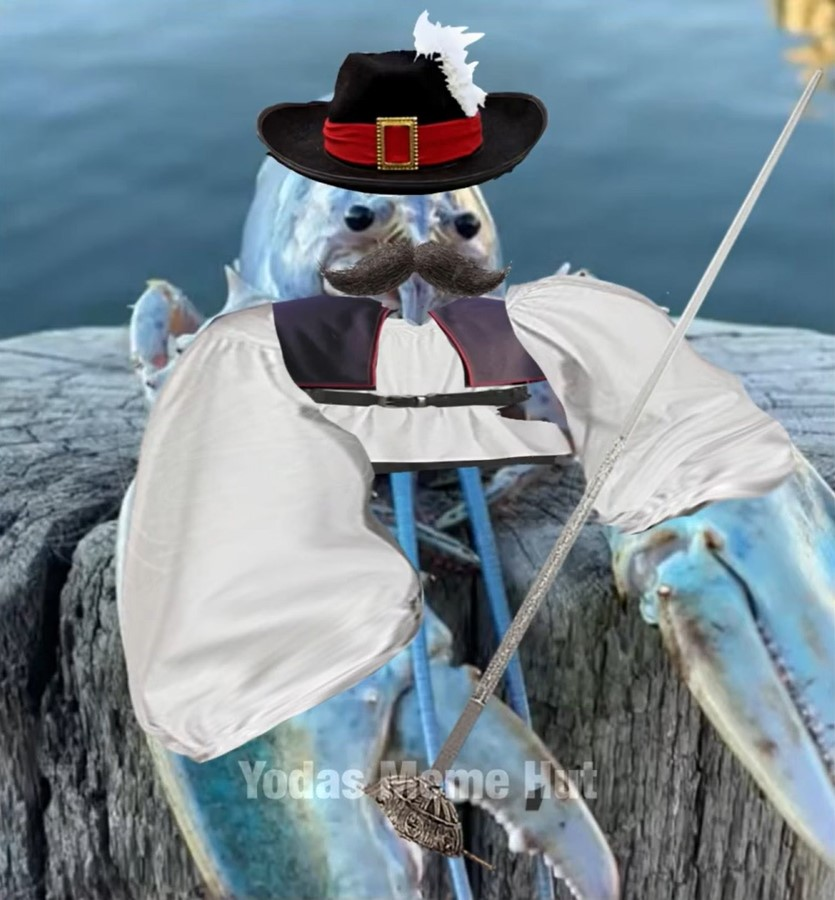
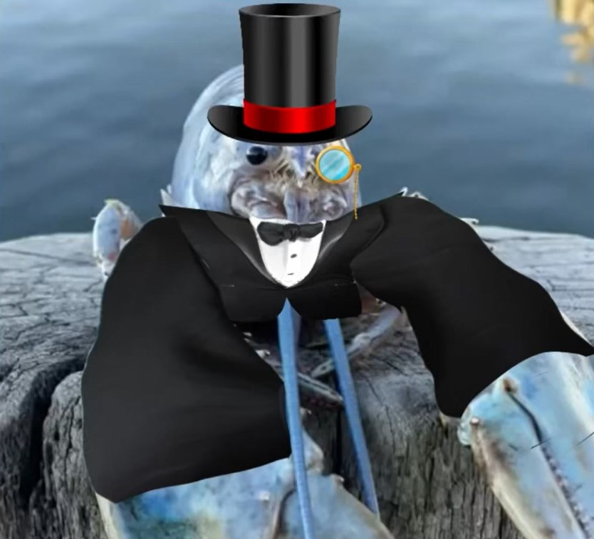
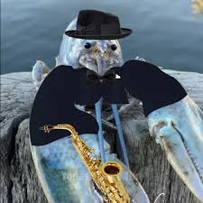
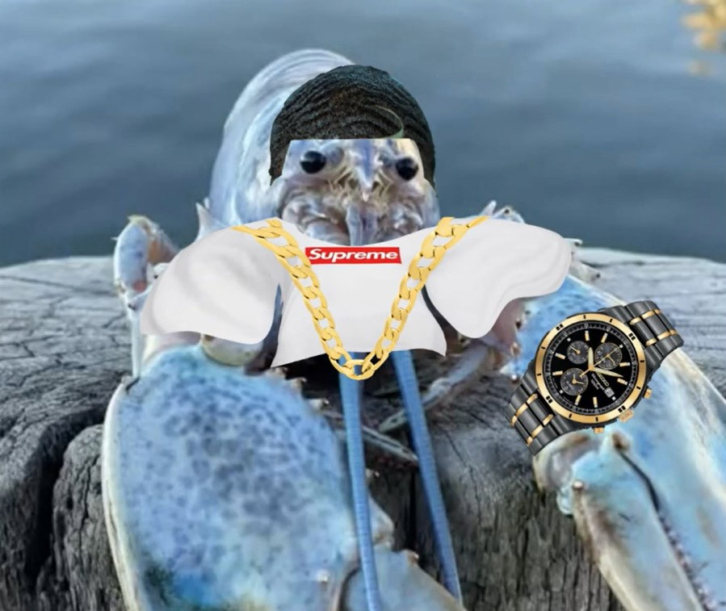
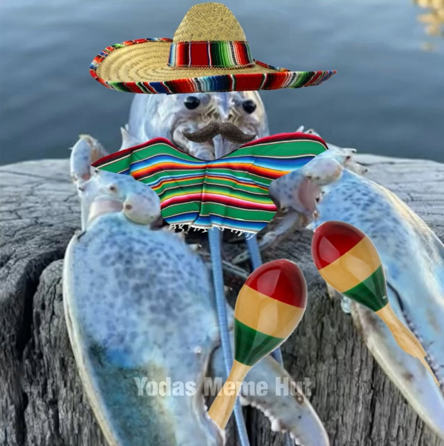
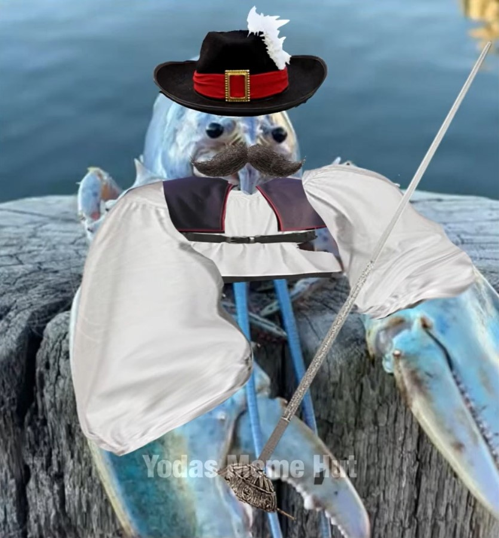
 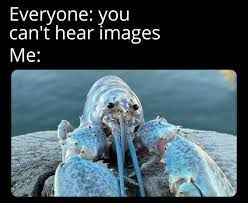
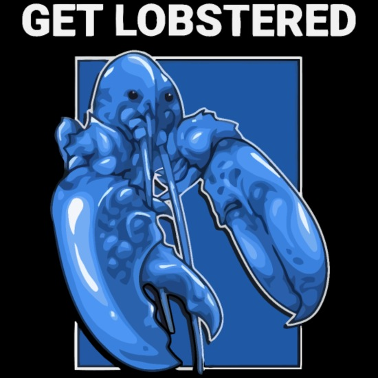
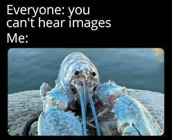
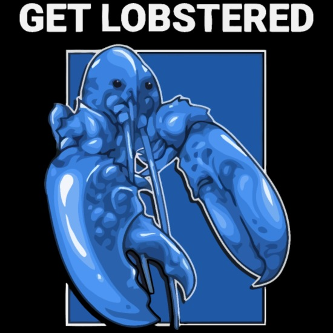
Buenas. Te habla un cualquiera al cual por alguna razón te ha dado por investigar.
Como habrás podido deducir, soy Manuel, hijo de Manuel, hijo de Manuel, y siendo forzado a crear una página tematizada, como el gran ególatra que soy decidí crearla sobre mí mismo. Dicho esto, puedes seguir leyendo para saber algo más de mí, ya sea mi disfrute o dolor.
Para el momento que escribo esto, estoy estudiando el grado superior de Desarrollo de Aplicaciones Multiplataforma (DAM), y debo decir, que lo estoy sufriendo. Pero para entender por qué elegí estudiar esto, debemos ir atrás...
Mucho antes de que el COVID tuviera nombre, un joven estúpido de nombre Manuel pasaba por una decisión por tomar; "¿Qué estudiar una vez acabada la ESO?" Durante estos días muchas dudas rondaban por su cabeza, pues no tenía nada pensado, y tras recomendaciones de personajes terciarios innecesarios de nombrar en esta historia, decidió tomarlas, siendo estas echar matrícula en grados medios de cocina, de farmacia y de informática.
Con la espera de ver su siguiente curso, llegó la noticia; "Toca estudiar informática. Al menos aprenderé algo útil" Eso decía después de ser aceptado en el curso elegido por ser del centro donde estudió, siendo imposible ser rechazado, comenzando así su viaje en este doloroso aprendizaje informático, con duras y dolorosas pruebas que incluían máquinas virtuales, y desastrosas experiencias con el profesorado y jefatura, donde su única esperanza es obtener la capacidad de crear su propio videojuego, Hasta que...
Luego de 3 años en el curso, repitiendo por solo una asignatura, quedaba entrar al grado superior para poder cumplir ese lejano sueño del que nacía esa pequeña esperanza, pero este le sería todavía más lejano, al ser notificado de su estado de reserva en el centro. No habían muchas opciones, y a la desesperada, optó por entrar a un curso de cocina, para luego ser darse cuenta del terrible horario que estaba por venir junto al curso. Tras un tiempo para replantear la situación, optó por renunciar, haciendo así un año sabático.
Con esta amarga elección, solo quedaba esperar que el día llegase, pero... ¿Mientras qué?
Durante un solo año, se fortaleció gracias al deporte, razón de su abandono. Descubrió nuevos gustos y redescubrió varios que permanecían dormidos. Pasó por terribles experiencias, siendo estas en su entorno diario, que cada vez iba a peor, hasta que casi se lleva la vida de un ser querido, acontecimiento el cual los hizo entrar en razón, madurar y evolucionar.
Tras este tortuoso año, llegó el momento de saber su destino... y dicho fue positivo para él, aunque no todo como deseaba, pues era con aquel temible horario. Pero luego de tiempo meditándolo, siguió aldelante, entrando por fin en el curso anelado.
Ahora queda ver con el pasar del tiempo si el joven consigue acercarse más a su menos lejano sueño de creación.
Dejando de lado historia deprimentes, hablaré que cosas que si me gustan (y con algunas también sufro). Empezando por lo sano, disfruto de entrenar calistenia. Llevo entrenando desde hace año y medio, y aunque hay días que me falta motivación, sigo con la intención de ser cada vez mejor mental y físicamente, además que gracias al deporte he podido conocer a gente maravillosa
Otras cosas que me gustan son las series animadas, coleccionar peluches, hacer videos tontos, ver películas (siendo adoctrinado por mis amigos), hacer el imbécil, jugar juegos de mesa y los videojuegos, sobre todos los multijugador, ya que al tener que compartirlos con alguien, estos terminan siendo prácticamente infinitos y con infinitas posibilidades en cada partida, ya sean juegos simples y accesibles como Mario Party o Pokemon, como competitivos, siendo necesario práctica y estudio en ellos para dar un buen combate, como los juegos de lucha.
Tras estos años de doloroso estudio de informática, desarrollo de traumas con las máquinas virtuales, descubrir lo caros pero muy hermosos que pueden ser los peluches, encontrar un deporte de disfruto y con el que tengo un objetivo a alcanzar, viajar y reir como nunca con mis amigos, poder solucionar todos los dolores que tenía no solo yo, también mi familia, volver a sentir paz en mi casa, volver a apreciar a mis padres... siento que, el año no ha sido una pérdida de tiempo.
Puede que no haya sido lo "ideal" no haber hecho más, pero no me arrepiento. Ahora que estoy estudiando lo que quería y la estoy pasando putas (y MUY probablemente suspenda), no lo veo como perder el tiempo, como me pasaba antes.
Tras un emotivo discurso, nuestro joven, ahora algo experimentado, va rumbo a su siguiente sufrimiento, (no del todo) preparado para muchas, y sobre todo la más dura de las adversidades: Repetir curso
Solo queda esperar para descubrir como se desembolverá ante cercana tortura...
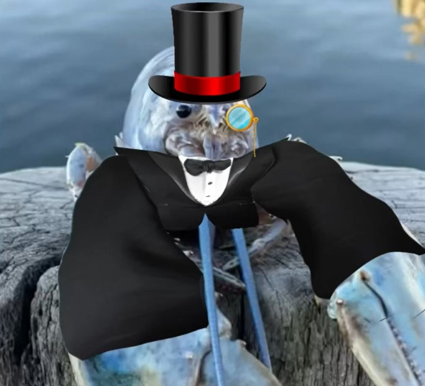
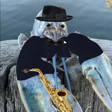
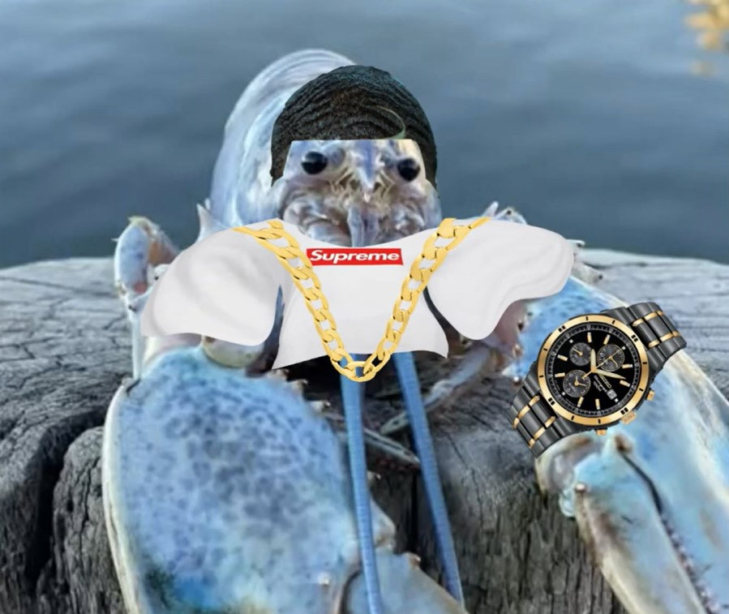
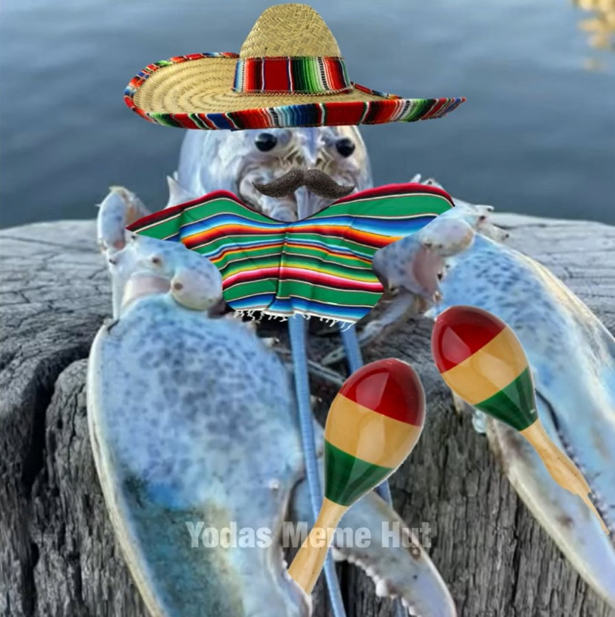
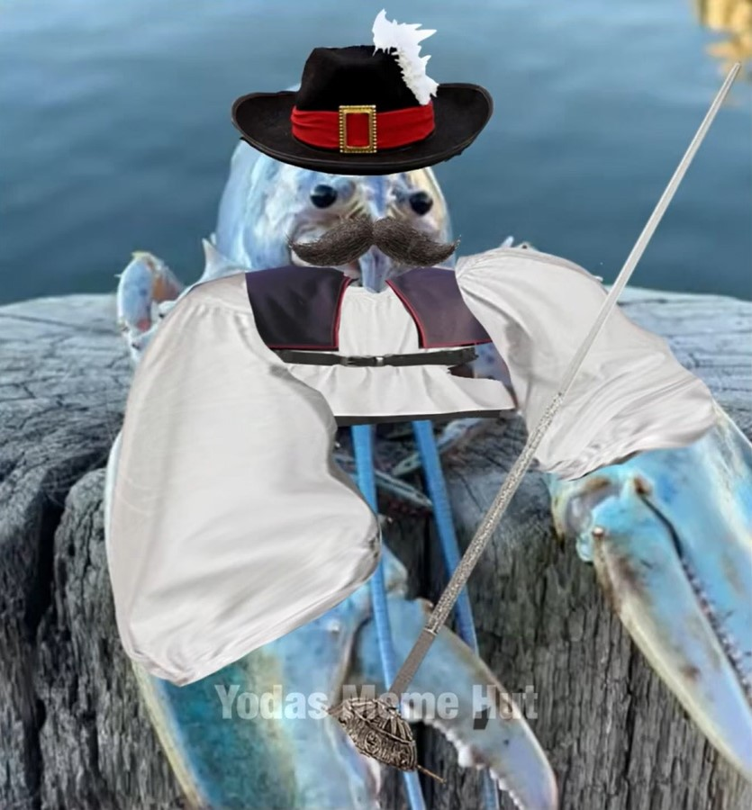
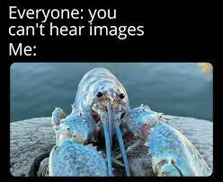
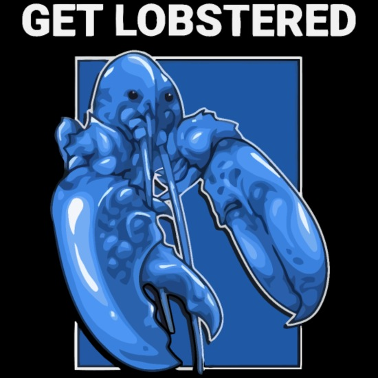